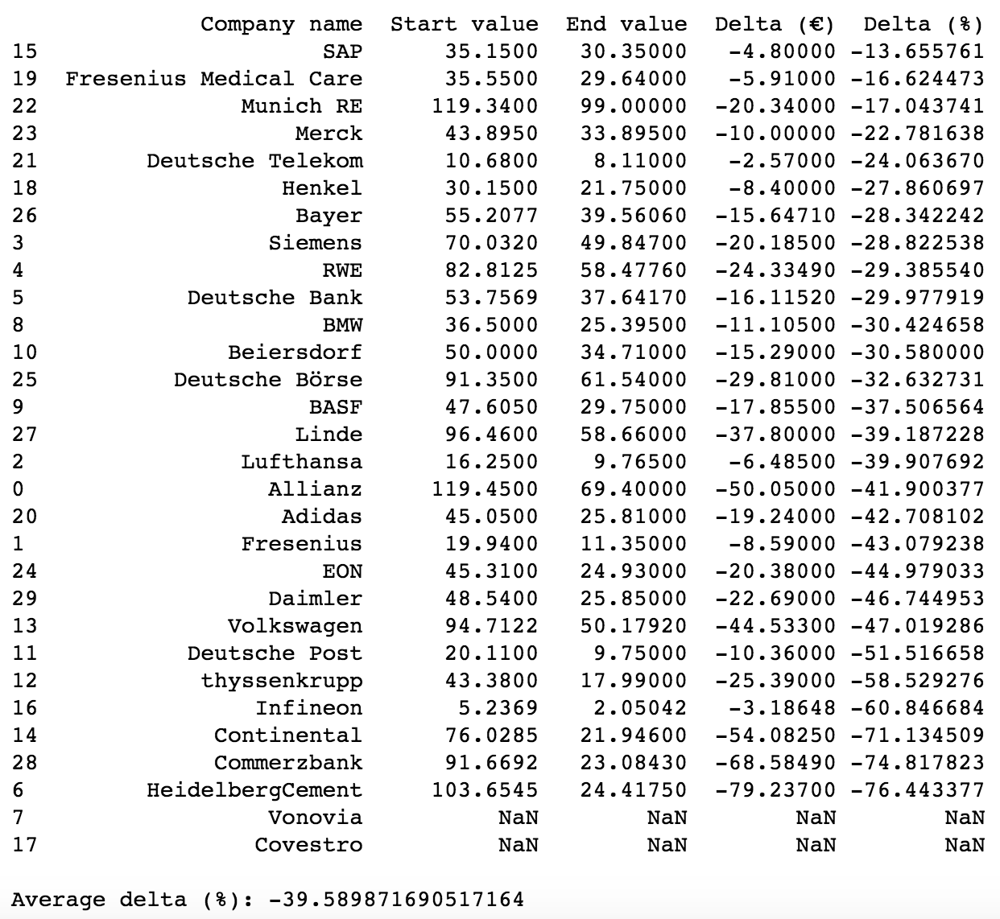
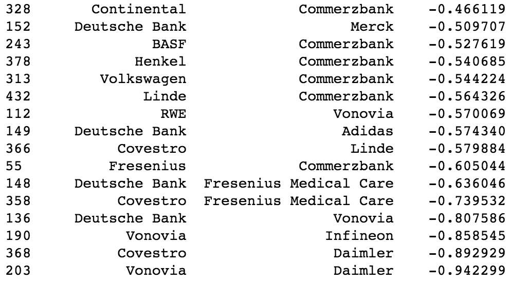
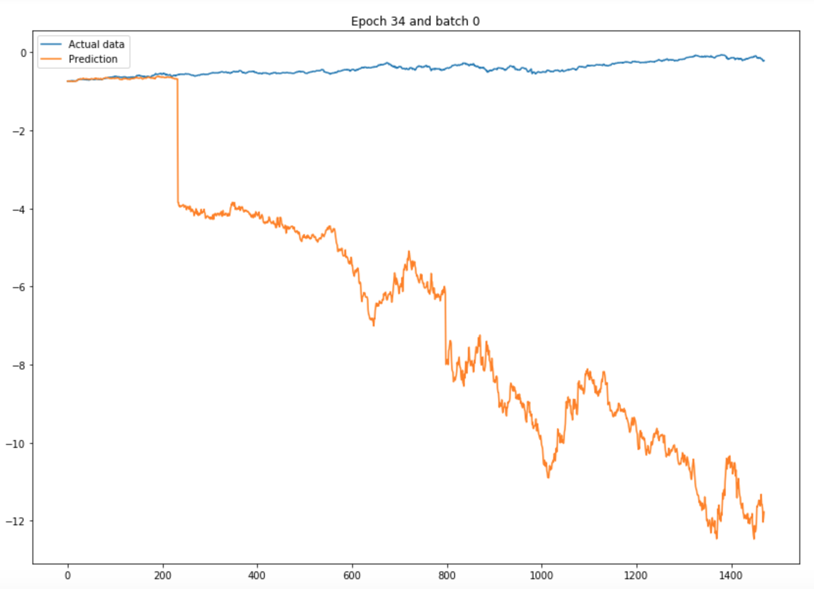

## Analyse der Aktienkurse
<div> <h2>Ziel</h2> <ul> <li>Analyse der DAX-Werte</li> <li>Regressionsanalyse (langfristiger Trend)</li> <li>Clustering (Scoring)</li> </ul> </div>
<div> <h2>Daten</h2> <ul> <li>Historische Aktienkurse von <a href="https://www.ariva.de">https://www.ariva.de</a></li> <ul> <li>01.07.1988 - 01.06.2018 (DAX)</li> <li>02.10.1989 - 01.06.2018 (Dow Jones)</li> </ul> <li>Analyse von fehlenden Werten</li> <li>Nacherhebung von Werten</li> <ul> <li>93 Datensätze im DAX</li> <li>1339 Datensätze im Dow Jones</li> </ul> </ul> </div>
<div> <h2>Clustering</h2> <ul> <li>Eigenes Rating der verschiedenen Unternehmen</li> <li>Verwendung von k-Means </li> <li>Variation bei Clusteranzahl und Jahr</li> <li>Auf Basis von Dividenenrendite und Aktienkursentwicklung</li> </ul> </div>
<div> <h2>Regressionsanalyse</h2> <ul> <li>xxx</li> </ul> </div>
<div> <h2>Prognosen/Spracherkenn.</h2> <ul> <li>Voruntersuchungen und -arbeiten</li> <li>Berechnungen von Korrelationen</li> <li>Vorhersagen und Prognosen</li> <ul> <li>Auf Basis der Cluster-Analyse</li> <li>Neuronale Netze auf Basis von TensorFlow</li> </ul> <li>Spracherkennung und -steuerung</li> </ul> </div>
<h2>Vielen Dank für Ihre Aufmerksamkeit!</h2> <span>Neue Konzepte, WWI 15 SEB</span> <ul> <li>Philipp Drayß (6987646)</li> <li>Martin Faber</li> <li>Marius Spielberger (1768841)</li> <li>Jonas Zasada (2143352)</li> </ul>
## Erkenntnisse der Aktienkurs-Analyse
<div> <h2>Hinweis</h2> <ul> <li>Ausführliche Informationen und Erklärungen der Erkenntnisse sind in den einzelnen Jupyter-Notebooks im <a href="https://github.com/mariusspielberger/wwi15seb_machine-learning">Repository</a> vorhanden</li> </ul> </div>
<div> <h2>Weltwirtschaftskrise 2008</h2> <div id="left">  </div> <div id="right"> <ul> <li>Auswirkungen auf den DAX</li> <li>SAP am wenigsten betroffen</li> <li>Eine Bank nur an vorletzter Stelle</li> </ul> </div> </div> </div>
<div> <h2>Weltwirtschaftskrise 2008</h2> <div id="left"> </div> <div id="right"> <ul> <li>Auswirkungen auf den Dow Jones</li> <li>McDonalds machte keinen Verlust</li> <li>Eine Kreditinstitut nur an vorletzter Stelle</li> </ul> </div> </div> </div>
<div> <h2>Weltwirtschaftskrise 2008</h2> <div id="left"> </div> <div id="right"> <ul> <li>McDonalds-Aktienkurs im Zeitraum von 02.06.2008 - 01.06.2009</li> <li>Einziges Unternehmen im DAX und Dow Jones mit keinem Verlust</li> </ul> </div> </div>
<div> <h2>Korrelationsanalyse</h2> <div id="left"> <img src="./img/DAX_Correlation-Positive.png" alt="Correlation analysis of DAX" /> </div> <div id="right"> <ul> <li>Vergleich aller Branchen des DAX</li> <li>Positive Korrelationen</li> <li>Zusammenhang zwischen den Branchen Chemie und Verbrauchsgüter realistisch</li> </ul> </div> </div>
<div> <h2>Korrelationsanalyse</h2> <div id="left"> </div> <div id="right"> <ul> <li>Vergleich aller Branchen des DAX</li> <li>Negative Korrelationen</li> <li>Zusammenhang zwischen den Branchen Wohnungsbau und Material realistisch (Korrelation widerlegt)</li> </ul> </div> </div>
<div> <h2>Korrelationsanalyse</h2> <div id="left"> </div> <div id="right"> <ul> <li>Vergleich aller Unternehmen des DAX</li> <li>Positive Korrelationen</li> <li>Zusammenhang zwischen BASF und Linde realistisch</li> </ul> </div> </div>
<div> <h2>Korrelationsanalyse</h2> <div id="left">  </div> <div id="right"> <ul> <li>Vergleich aller Unternehmen des DAX</li> <li>Negative Korrelationen</li> <li>Kein Zusammenhang zwischen Vonovia und Daimler realistisch</li> </ul> </div> </div>
<div> <h2>Korrelationsanalyse</h2> <ul> <li>Analoges Vorgehen mit den Dow Jones-Daten</li> <li>Schlechter interpretierbare Ergebnisse als beim DAX</li> </ul> </div>
<div> <h2>Prognosen mit fbprophet</h2> <div id="left"> </div> <div id="right"> <ul> <li>Eingabe-Daten vom 01.01.2015 - 01.01.2018</li> <li>Prognose-Zeitraum vom 02.01.2018 - 01.06.2018</li> <li>Durchschnittliche Abweichung im DAX bei 20,78 %</li> <li>Bestes Ergebnis bei Munich RE (1,79 % Abweichung)</li> </ul> </div> </div>
<div> <h2>Prognosen mit fbprophet</h2> <div id="left"> </div> <div id="right"> <ul> <li>Entwicklung der Aktienkurse im Prognose-Zeitraum (02.01.2018 - 01.06.2018)</li> <li>Durchschnittlicher Verlust im DAX von 4,34 %</li> </ul> </div> </div>
<div> <h2>Prognosen mit fbprophet</h2> <div id="left"> </div> <div id="right"> <ul> <li>Eingabe-Daten vom 01.01.2014 - 30.12.2016</li> <li>Prognose-Zeitraum vom 02.01.2017 - 29.12.2017</li> <li>Durchschnittliche Abweichung im DAX bei 23,26 %</li> <li>Bestes Ergebnis bei der Deutschen Post (0,12 % Abweichung)</li> </ul> </div> </div>
<div> <h2>Prognosen mit fbprophet</h2> <div id="left"> </div> <div id="right"> <ul> <li>Entwicklung der Aktienkurse im Vergleichs-Zeitraum (02.01.2015 - 29.02.2017)</li> <li>Durchschnittlicher Gewinn im DAX von 34,98 %</li> <li>Auch bei geringerem Anstieg kein besseres Ergebnis</li> </ul> </div> </div>
<div> <h2>Prognosen mit pyFlux</h2> <div id="left"> <img src="./img/DAX_Forecast-pyflux.png" alt="Forecast with fbprophet" /> </div> <div id="right"> <ul> <li>Verwendung des GARCH-Algorithmus</li> <li>Wesentlich schlechtere Vorhersage im Vergleich zu fbprophet</li> <li>Lange Laufzeit</li> <li>Kenntnis des Modells nötig</li> </ul> </div> </div>
<div> <h2>Prognosen auf Basis der Cluster-Analyse</h2> <div id="left"> </div> <div id="right"> <ul> <li>Ergebnis mit dem 1. Cluster</li> <li>16 unterschiedliche DAX-Unternehmen</li> </ul> </div> </div>
<div> <h2>Prognosen auf Basis der Cluster-Analyse</h2> <div id="left"> </div> <div id="right"> <ul> <li>Ergebnis mit dem 2. Cluster</li> <li>16 unterschiedliche DAX-Unternehmen</li> <li>Verlust von 1,19 %</li> <li>Anweichung der Progonse von 12,42 %</li> </ul> </div> </div>
<div> <h2>Prognosen auf Basis der Cluster-Analyse</h2> <ul> <li>Bei allen 9 Cluster-Ergebnissen kein nennenswerter Gewinn oder Verlust (Durchschnitt von -2,93 %)</li> <li>Im gesamten DAX Verlust von 4,44 %</li> <li>Im betrachteten Zeitraum liegt Modell geringfügig über dem Durchschnitt</li> </ul> </div> </div>
<div> <h2>TensorFlow-Modell</h2> <div id="left"> <img src="./img/TensorFlow-Model.png" alt="TensorFlow model" /> </div> <div id="right"> <ul> <li>Im Schaubild links MSE von 0,57 (Test-Daten) für den DAX</li> <li>Untersuchung und Optimierung der Batch Size und Anzahl der Epochen</li> <li>Annäherung im Mittel trotzdem schlecht</li> </ul> </div> </div>
<div> <h2>TensorFlow-Modell</h2> <div id="left">  </div> <div id="right"> <ul> <li>Im Schaubild links MSE von 49,28 (Test-Daten) für den Dow Jones</li> <li>Im Durchschnitt liegt MSE bei 35 (nicht gut)</li> <li>Weitere Optimierung nötig</li> </ul> </div> </div>
<div> <h2>Spracherkennung</h2> <div id="left"> </div> <div id="right"> <ul> <li>Spracherkennung zur dynamischen Steuerung des Programmablaufs</li> <li>Funktioniert im Durchschnitt maximal bei der 3. Wiederholung</li> <li>Nützlich in vielen Bereichen</li> </ul> </div> </div>
<div> <h2>Gesamt-Fazit</h2> <ul> <li>Prognose nur auf Basis von vergangenheitsbasierten Zeitreihendaten kritisch</li> <li>In Modellen durchschnittliche Abweichungen von 25 %</li> <li>Optimierung der neuronalen Netze zeitaufwändig</li> <li>Spracherkennung funktioniert gut</li> </ul> </div>